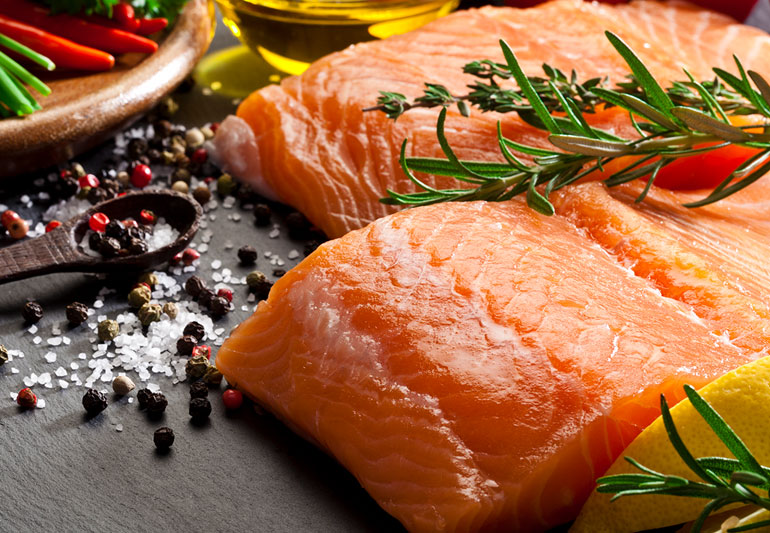

Pan-Seared Salmon
Description
Learn how long to cook salmon on the stove with this easy pan-seared salmon recipe. The salmon fillets are simply seasoned with salt, pepper, and capers. Garnish with slices of lemon.

- 4 (6 ounce) fillets salmon
- 2 tablespoons olive oil
- 2 tablespoons capers
- ⅛ teaspoon salt
- ⅛ teaspoon ground black pepper
- 4 slices lemon
Ingredients:
- Preheat a large heavy skillet over medium heat for 3 minutes.
- Coat salmon fillets with olive oil; place skin-side down in the preheated skillet and increase heat to high. Sprinkle with capers, salt, and pepper; cook for 3 minutes on one side. Turn salmon fillets over; continue to cook until salmon flakes easily with a fork, about 5 minutes.
- Transfer salmon to individual plates and garnish with lemon slices.